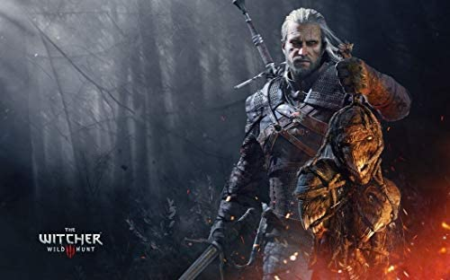

Au sein du royaume de Lothric, le retentissement d'une cloche signale que la Première Flamme, responsable du maintien de l'Âge du Feu, se meurt. Comme cela est arrivé maintes fois par le passé, la venue de l'Âge des Ténèbres provoque l'apparition des Carcasses, condamnées à se relever après leur mort. L'Âge du Feu peut être prolongé en se liant au Feu, un rituel dans lequel les grands seigneurs et héros sacrifient leurs âmes afin de faire perdurer la Première Flamme. Cependant, le Prince Lothric, désigné comme devant se lier au Feu, a abandonné son devoir et choisi d'observer de loin la mort des flammes. La cloche est le dernier espoir pour l'Âge du Feu, ressuscitant les anciens Seigneurs des Cendres (les héros s'étant liés au Feu dans les anciens âges) pour tenter de lier la Première Flamme une fois de plus mais tous les Seigneurs, sauf un, cherchent à fuir leur devoir. La cloche appelle ainsi des guerriers mort-vivants ayant échoué à se lier au Feu, appelés Morteflammes. Le joueur incarne un de ces Morteflammes, qui devra tuer les quatre Seigneurs des Cendres pour ramener leurs cendres et les lier au Feu : les Veilleurs des Abysses, des combattants héritiers d'Artorias le Marche-Abysses ayant uni leurs âmes ; Yhorm, le géant devenu roi d'une cité humaine vénérant la Flamme profanée ; Aldrich, le Dévoreur d'hommes dont la faim l'a amené à se nourrir des âmes des anciens Dieux vivant autrefois à Anor Londo. Il trouvera enfin le prince de Lothric dans son château, protégé par son frère aîné, plus doué au combat mais estropié.
Flight Simulator est un logiciel de simulation de vol pour Windows , vendu et souvent vu comme un jeu vidéo.

The Witcher 3: Wild Hunt (en polonais : Wiedźmin 3: Dziki Gon) est un jeu vidéo de type action-RPG développé par le studio polonais CD Projekt RED. Sorti le 19 mai 2015 sur PC (Windows et Linux1 ), PlayStation 4 et Xbox One, puis sur Nintendo Switch le 15 octobre 2019, il fait suite narrativement à The Witcher (2007) et The Witcher 2: Assassins of Kings (2011). Il est ainsi le troisième jeu vidéo à prendre place dans l'univers littéraire du Sorceleur, créé par l'écrivain polonais Andrzej Sapkowski, mais aussi le dernier à présenter les aventures de Geralt de Riv.
